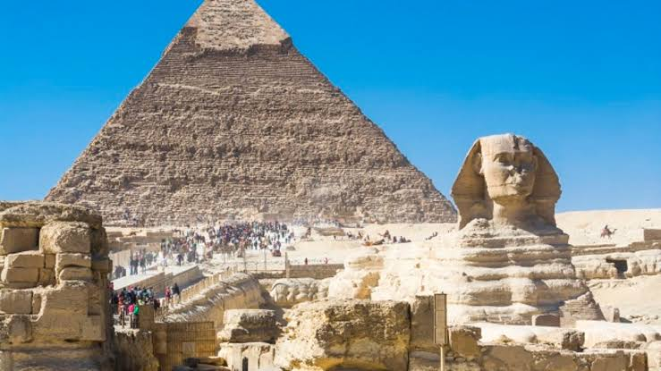

Idade Antiga
Quando adentramos o estudo da Antiguidade ou Idade Antiga, é bastante comum ouvir dizer que esse período histórico é marcado pelo surgimento das primeiras civilizações. Geralmente, ao adotarmos a expressão “civilização” promove-se uma terrível confusão que coloca os povos dessa época em uma condição superior se comparados às outras culturas do mesmo período.
Na verdade, a existência de uma civilização não tem nada a ver com essa equivocada ideia de que exista um povo “melhor” ou “mais evoluído” que os demais. O surgimento das primeiras civilizações simplesmente demarca a existência de uma série de características específicas. Em geral, uma civilização se forma quando apontamos a existência de instituições políticas complexas, uma hierarquia social diversificada e de outros sistemas e convenções que se aplicam largamente a uma população.
Ao contrário do que se possa imaginar, não podemos apontar uma localidade específica onde encontremos a formação das primeiras civilizações da história. O processo de fixação e desenvolvimento das relações sociais aconteceu simultaneamente em várias regiões e foi marcado pelo contato entre civilizações, bem como a incorporação de duas ou mais culturas na formação de outra civilização.
Reportando-se ao Mundo Oriental, podemos assinalar o desenvolvimento das milenares civilizações chinesa e indiana. Partindo mais a oeste, localizamos a formação da civilização egípcia e dos vários povos que dominaram a região Mesopotâmica, localizada nas proximidades dos rios Tigre e Eufrates. Também conhecidas como civilizações hidráulicas, essas culturas agruparam largas populações que sobreviviam da exploração das águas e terras férteis presentes na beira dos rios.
Na parte ocidental do planeta, costuma-se dar amplo destaque ao surgimento da civilização greco-romana. O prestígio dado a gregos e romanos justifica-se pela forte e visível influência que estes povos tiveram na formação dos vários conceitos, instituições e costumes que permeiam o Ocidente como um todo. Contudo, não podemos também deixar de dar o devido destaque aos maias, astecas, incas e olmecas que surgem no continente americano.
Sem dúvida, o estudo das civilizações antigas se mostra importante para que possamos entender melhor sobre as várias feições que a nossa cultura assume atualmente. Contudo, sob outro ponto de vista, o estudo da Antiguidade também abre caminho para que possamos contrapor os valores e parâmetros que um dia foram comuns a alguns homens e hoje se mostram tão distantes do que vivemos. É praticamente infinito o leque de saberes que se aplica a esse período histórico.
